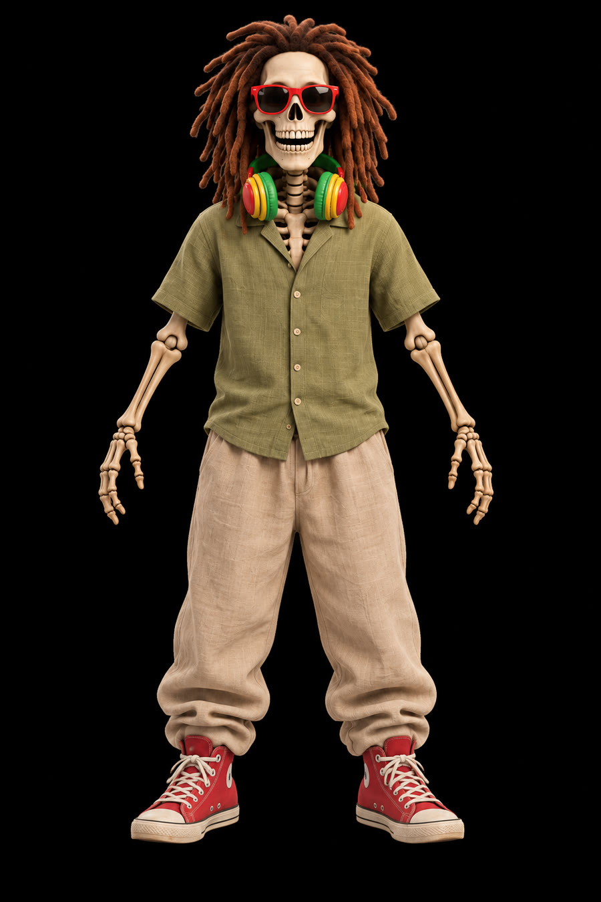

ZION
SKANK
A grinning rasta skeleton in red shades, singing his way through felt towns, anime cities, video games and neon Halloween streets. Songs and direction by James; production by Claude.
The catalogue
Newest first · ZS = catalogue number
Same bones, new world every time
Zion Skank is the face of James's reggae. Each film drops him into a new art style and a new fusion of reggae with something else, but a handful of things never change, and every prompt carries them.
- FaceA grinning skull, always smiling. When he sings, the jaw opens; no lips, no tongue.
- ShadesRed sunglasses, always on. His eyes are never shown.
- HairLong brown dreadlocks.
- HeadphonesRed, gold and green, around his neck.
- ShoesRed high-top sneakers.
- MoodPlayful and positive. Spooky-cute at most, never gory.
How they're made
The usual route for a story filmSong
James writes the idea; Claude drafts lyrics and the style prompt; Suno makes the track.
Zion's look
A character sheet in the film's style, made in ChatGPT from a reference.
Boards
Action-board stills timed to the song, one prompt at a time.
Clips
Each board becomes a short AI video clip; singing shots get lip sync.
The edit
Claude cuts on the beat and adds lyrics, effects and graphics in code.